Hummel Hex: Waben statt Pillen
Option 3 mit sechseckigen Knöpfen, Chips, Badges und Avataren. Die Knöpfe haben eine sichtbare Kante, heben sich beim Überfahren leicht an und sinken beim Drücken in ihre Kante. Mehr gepunktete Flugbahnen der Hummel. Beide Varianten teilen jeden Token außer dem Eckenradius der Waben.
-
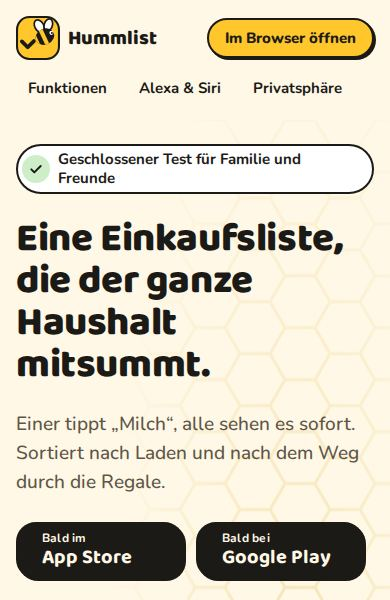
-
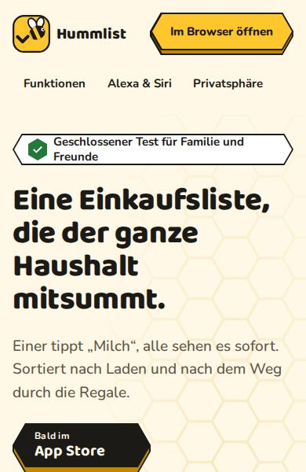
3a · Hex Scharf
Spitze Wabenecken (Eckenradius 0), knackig wie eine Bienenwabe.
-
3b · Hex Weich
Dieselben Waben mit abgerundeten Ecken (8 px bei 48 px Höhe, wächst mit der Größe).
Widgetbook: Komponenten-Katalog (Flutter) Die Hex-Bausteine als echte Flutter-Widgets: Knöpfe in jedem Zustand, Chips und Listenzeilen, scharf und weich, hell und dunkel. Ändere Beschriftung, Form, Textgröße und Gerät selbst.
Hex Weich in anderen Kunststilen
Dieselbe Seite wie 3b, dieselbe weiche Wabe als Markenform, in fünf Kunststilen und einer Mischung mit Frische (5). Jede Seite hat eigene Tokens für Farbe und Schrift, dazu ein eigenes Zeichen ohne Biene. Hell und dunkel folgen der Systemeinstellung. Der Kontaktbogen vergleicht alle mit 3b und 5.
-
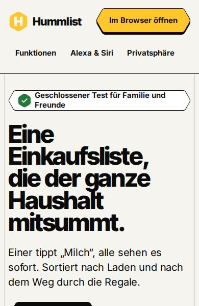
3c · Raster
Flaches Swiss-Editorial: strenges Raster, sehr große Schrift, Haarlinien, Honig als einzige Signalfarbe.
-
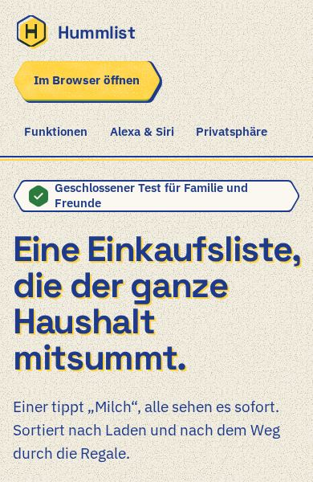
3d · Riso
Risografie: Papierkorn, Gelb und Blau im Überdruck, leicht verrutschte Farbebenen.
-
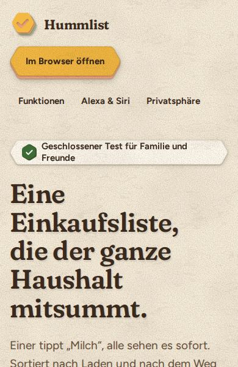
3e · Papierschnitt
Geschnittenes Papier: Waben in mehreren Lagen mit weichen Schatten.
-
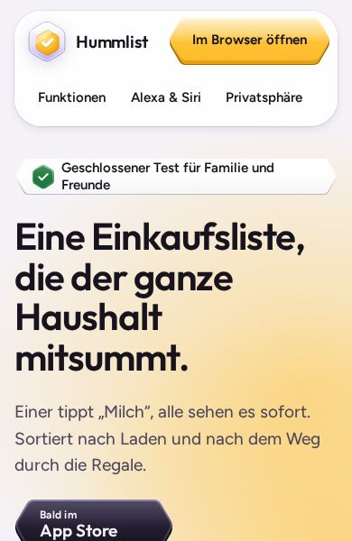
3f · Glas
Durchscheinende Waben in Schichten über warmem Licht, wie mattiertes Glas.
-
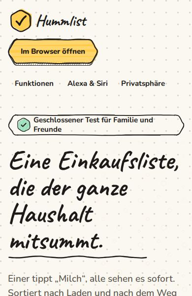
3g · Marker
Von Hand: Tuschkontur und Markerfarbe, Caveat für die großen Zeilen.
-
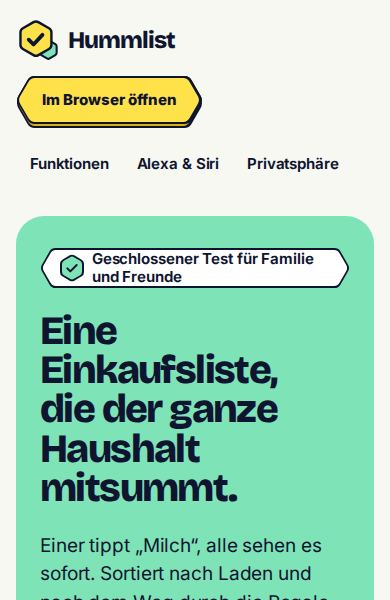
6 · Hex Frische
Die Mischung: Waben und Klarheit von 3b mit den Farbflächen von Frische (5), mehr Mint, kaum Rot.
-
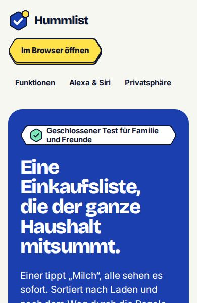
6b · Hex Frische (Original 5 Farben)
6 in den Originalfarben von Frische (5), auf Peters Wunsch: Kobalt als Hauptfläche, Zitrone darauf, Tomate als Akzentblock.
Alle fünf Richtungen
-
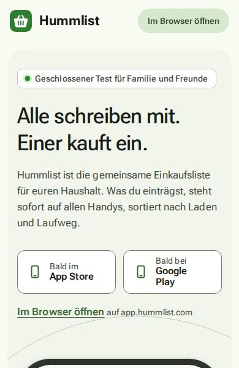
1 · Tonal
Bleibt bei der App: das Material-3-Farbschema aus #2E7D32, Roboto Flex, runde tonale Flächen.
-
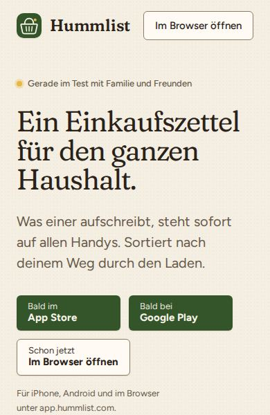
2 · Wochenmarkt
Warm und redaktionell: Papierflächen, Waldgrün und Rote Bete, Fraunces mit Figtree, gezeichnetes Obst und Gemüse.
-
3 · Hummel
Verspielt aus dem Namen heraus: Honig mit Tinte, Baloo 2 und Nunito, Sticker-Konturen, federnde Bewegung.
-
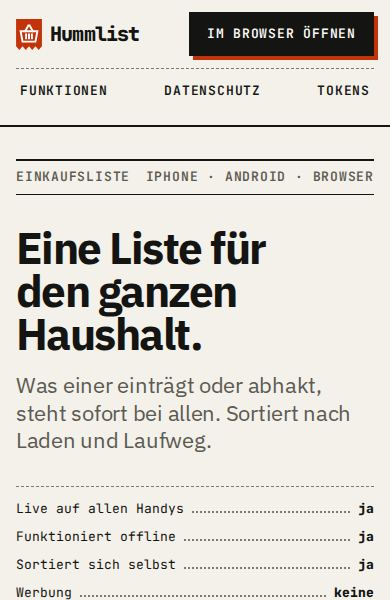
4 · Kassenzettel
Nüchtern wie ein Kassenbon: Thermopapier, Tinte, ein Bonrot, IBM Plex Sans mit JetBrains Mono, eckig und ohne weiche Schatten.
-
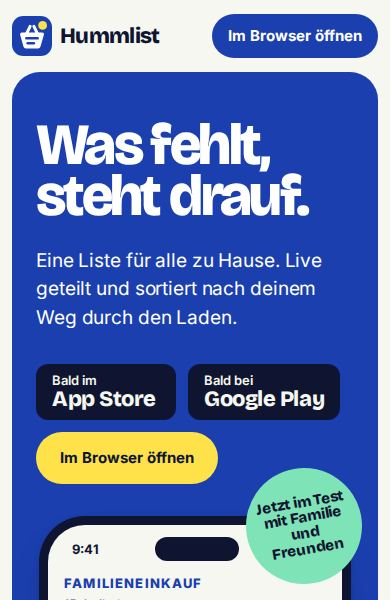
5 · Frische
Laut im guten Sinn: große Farbflächen in Heidelbeer-Kobalt, Minze, Tomate und Zitrone, Bricolage Grotesque mit Inter.